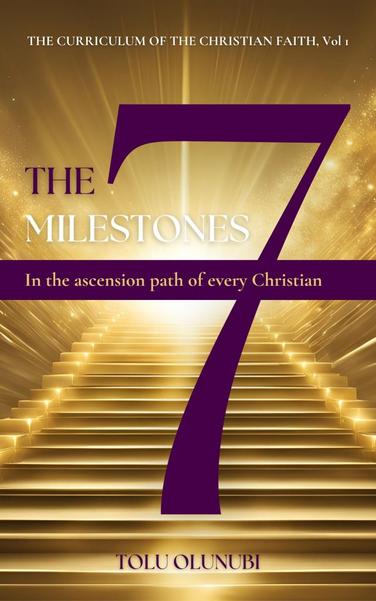
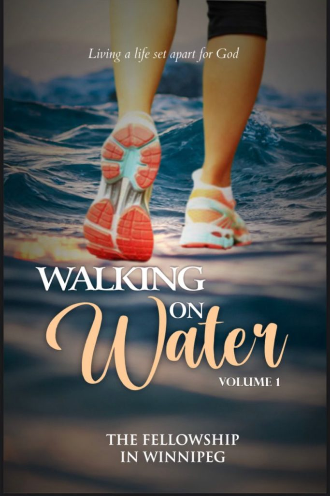
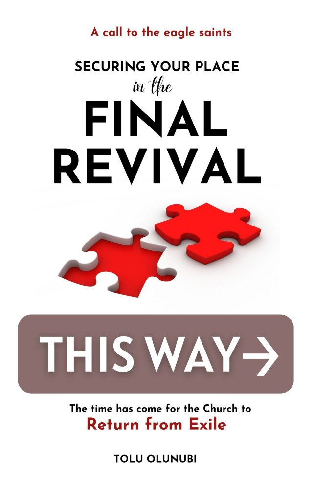

The Curriculum of the Christian Faith
Volume 1
Download PDF
Every Wednesday we open the Bible together at the University of Manitoba, ask questions, and learn from one another. Everyone is welcome.
Understanding your Salvation – We have been Saved Bible Study Outline, Winnipeg House Fellowship Download Leading Texts: Matthew 1:21, Luke…
Read →What does that mean? We can say that we are being saved [when we are undergoing moral transformations and renewals daily] -1st Peter…
Read →Pretext: Salvation, in a nutshell, is a word that is generally used to describe the business that our Lord Jesus came to accomplish on…
Read →Grace Bible Study Outline, Winnipeg House Fellowship Download GRACE Purpose of this Study: That as Colossians 1:6 says, we may know the…
Read →Faith Bible Study Outline, Winnipeg House Fellowship Download What is Faith? Hebrews 11:1 gives us a definition. It says: “Now faith is the…
Read →Resurrection – The Hope of a Believer Bible Study Outline, Winnipeg House Fellowship Download Main Text: 1 Corinthians 15 Foreword: Around…
Read →The Feasts of the Lord- Passover Bible Study Outline, Winnipeg House Fellowship Download The Feasts of the Lord – Passover (Exodus 12…
Read →The Feasts of the Lord – Pentecost Bible Study Outline, Winnipeg House Fellowship Download By God’s grace, we have been studying on the…
Read →The Feasts of the Lord – Trumpets Bible Study Outline, Winnipeg House Fellowship Download By God’s grace, we have been studying on the…
Read →This is the sixth feast among seven feasts that the Lord ordained for the people of Israel to keep. The feasts were key milestones that…
Read →Revelation 1:1-2, John 1:1-18, Hebrews 1:1-9, Luke 10:17-24, Matthew 16:13-19 Introduction What is the revelation of Jesus Christ? It is…
Read →The Book of Romans is arguably one of the most impactful books in the Bible, relative to establishing a person in a victorious Christian…
Read →Spiritual Understanding Bible Study Outline, Winnipeg House Fellowship Download The burden of this study is for the Lord in His mercy to…
Read →The Church (as a whole, worldwide) is the bride of Christ (Ephesians 5:22-31) , while a church in a city is a local expression of the bride…
Read →The burden of this bible study is to gain an understanding of the foundation (the core principles) of the vision that God has called us to…
Read →Introduction The burden of this bible study is to gain an understanding of the prophetic concept of The Rain of the Lord – its character…
Read →Introduction This bible study subject (Spiritual Warfare) is born out of an appreciation of the fact that life is spiritual. That is, we…
Read →The Foundation of Holiness, Consecration, and Purposeful Living Download Introduction All things are created for the purpose and pleasure…
Read →Living-as-Priests-of-God-Large-Font Download
Read →Gods-Church Download
Read →“There shall be a total and full redemption by Christ. This is a hidden mystery not to be understood without the revelation of the Holy…
Read →
Volume 1
Download PDF
Volume 1
Download PDF
Securing your Place in the Final Revival
Download PDF